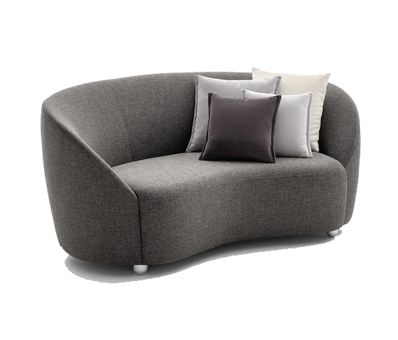
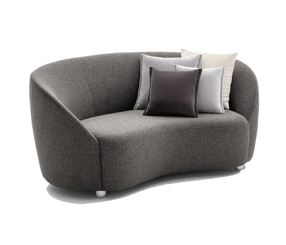

- 상품정보
- 리뷰
프리미엄 이중케어 패브릭
고강도 내구성을 자랑하는 풀바디 구조의 100% 폴리 블렌딩기법으로 패브릭 바디와 커버가 한번에 직조된 최상위 제품으로 내구성을 극대화하여
다양한 액티브 라이프 스타일에 적합하며, 모이스처 텐션을 통해 편안한 착석감을 제공합니다.
가죽소파나 커버링할 수 없는 패브릭 소파는 얼룩이나 오염물질을 물로 닦는다고 눈에 보이지 않는 속까지 깨끗하게 관리할 수 없습니다.
소파는 세탁만이 가장 안전하고 확실한 관리 방법입니다.
한번만 세탁해도 발수 기능이 사라진다는 것 알고 계셨나요?
듀커소파는 그래서 새롭게 생각했습니다.
겉커버를 세탁해도 속에서 내장재를 보호해주는 이중 커버 방식으로 오염 걱정을 해결해드립니다.
아직 리뷰가 없는 상품입니다.